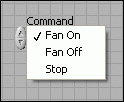
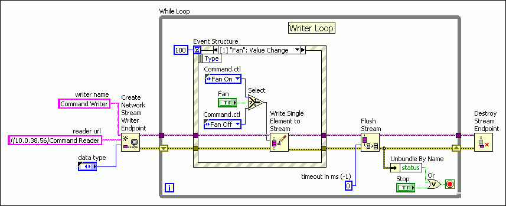
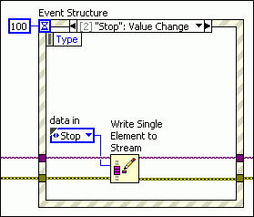
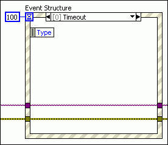
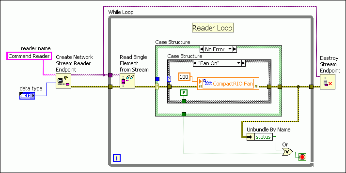
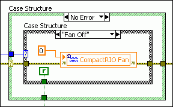
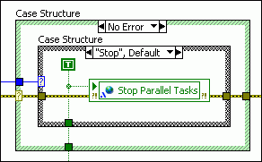

Complete the following steps to send commands from one computer to another using the Network Streams functions.
Note��You can use network streams on Windows and Real-Time systems only.
Create a type definition of an enumerated type control with an entry for each command. For example, the following figure shows an example of a type definition of an enumerated type control with commands to turn a fan on, turn a fan off, and stop the application that controls the fan.
Note��
Creating a type definition ensures that if you update one instance of the control, the other instances update as well.

Create a Writer Loop and a Reader Loop, just as you do when streaming data.
Within the Writer Loop, configure an Event structure to send the commands based on user input. For example, in the following figure, the Write Single Element to Stream function sends the Fan On or Fan Off command when the user clicks the Fan button.
Note��Use the Flush Stream function within the Writer Loop to minimize latency and ensure that commands propagate over the network immediately, as shown in the following figure.

Similarly, in the following figure, the Write Single Element to Stream function sends the Stop command when the user clicks the Stop button.

Configure the Event structure to do nothing if the Event structure times out, as shown in the following figure.

Within the Reader Loop, parse the commands and handle error conditions.
Place a Case structure inside the Reader Loop and wire the error out terminal of the Read Single Element from Stream function to the case selector.
Place a Case structure within the No Error case and wire the data out terminal of the Read Single Element from Stream function to the case selector. Use this Case structure to parse the commands you send from the Writer Loop. For example, in the following figure, when the Read Single Element from Stream function receives the Fan On command, the Case structure switches to the Fan On case and sets the I/O variable that controls the fan to an intensity of 100, which activates the fan.

Similarly, in the following figure, when the Read Single Element from Stream function receives the Fan Off command, the Case structure switches to the Fan Off case and sets the I/O variable that controls the fan to an intensity of 0, which deactivates the fan.

Finally, in the following figure, when the Read Single Element from Stream function receives the Stop command, the Case structure switches to the Stop case, stops the Reader Loop with a TRUE constant, and uses a single-process shared variable to stop any parallel tasks within the VI.

Within the Error case, write code to stop the Reader Loop and any parallel tasks within the VI if an error occurs, as shown in the following figure.